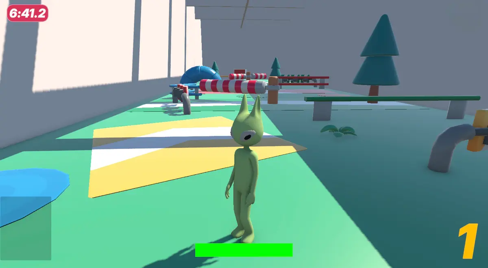
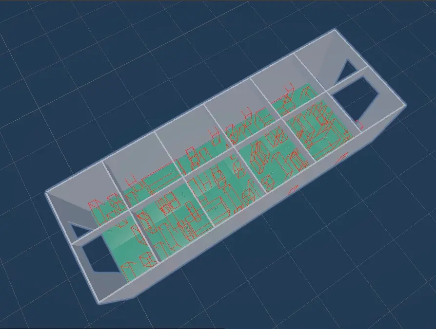

HorizonLab is a multiplayer party game built around a pool
of small, accessible mini-games. The pitch is simple:
something casual players can pick up in seconds, but with
enough variety and replay value that regular players keep
coming back.
The whole thing is built around the social side. Friends and
family playing together, online.

the character, in one of the arenas
Think Fall Guys or Mario Party in spirit. Built in Unity,
written in C#, targeting Windows.
The technical brief is unforgiving. A simple but attractive
UI, quick onboarding, and gameplay that has to stay fluid
even with multiplayer netcode and AI running underneath.

level layout, top-down
Online multiplayer is the core of the game. Players compete
or cooperate in real time, across a rotating roster of
mini-games. AI handles a few of the challenges and helps
thicken the atmosphere.
The goal: a launch that's quick to pick up, varied enough to
stay fresh, and deep enough to keep people coming back week
after week.